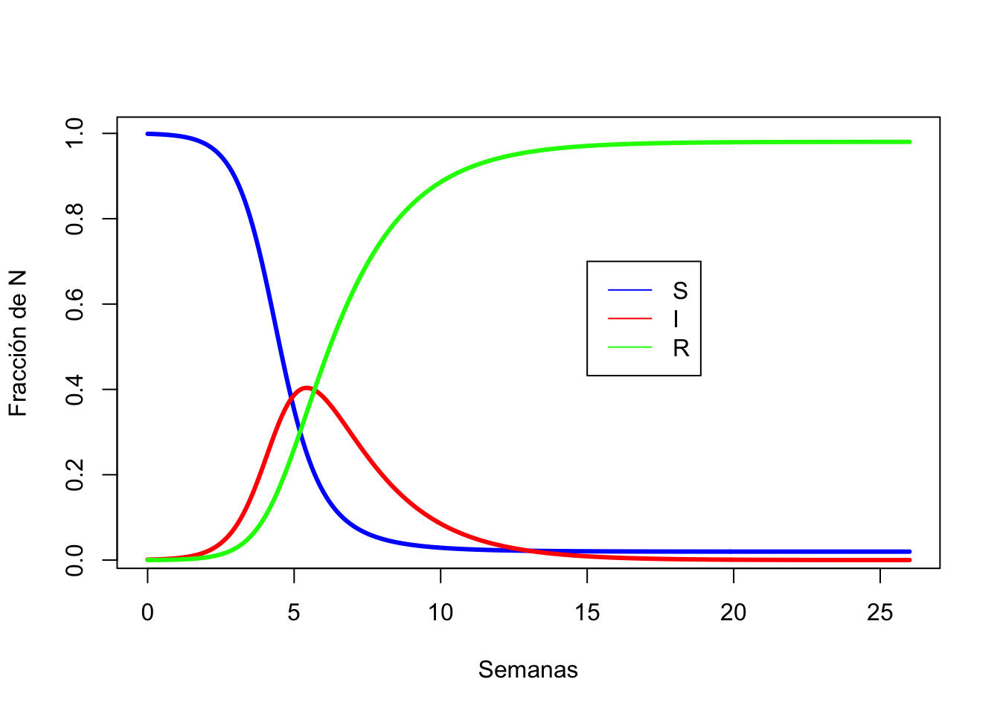
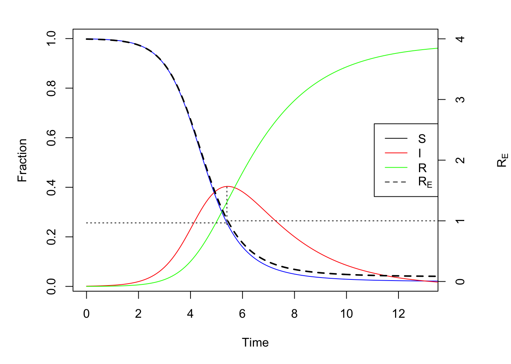
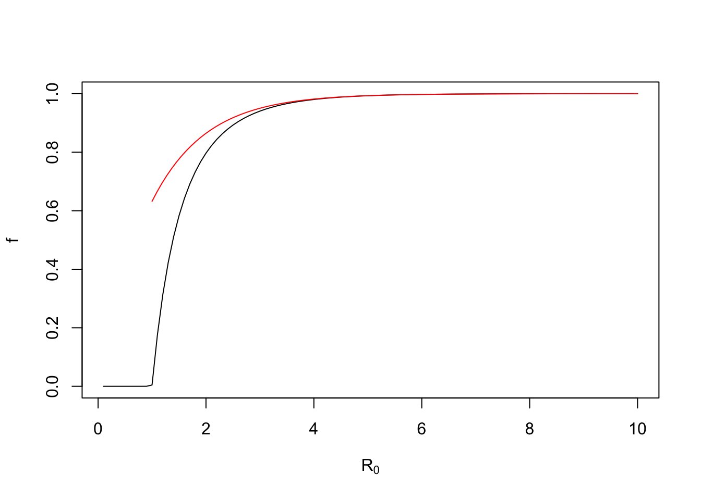
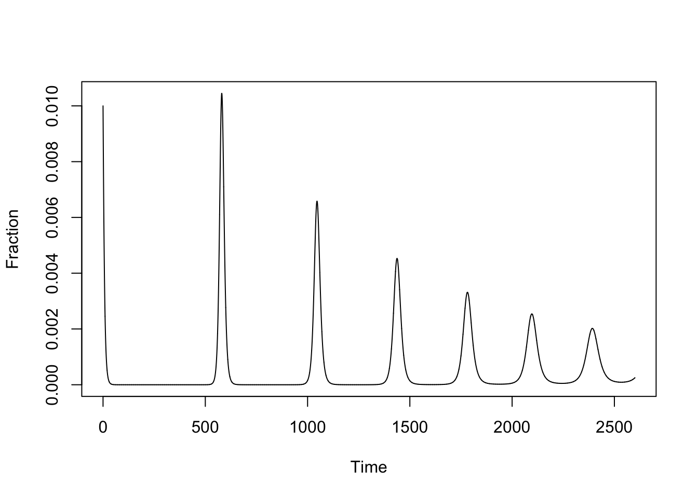

Modelos Mecanicistas - ODE - SIR
D. S. Fernandez del Viso (basado en Bjørnstad, 2018)
10/7/2020
Modelos Epidemiológicos Mecanicistas
En esta parte del curso vamos a trabajar con modelos construidos a partir del conocimiento de las relaciones entre los elementos que componen un sistema biológico-epidemiológico. El modelo básico que vamos a estudiar se conoce como SIR y se construye mediante la formulación de ecuaciones diferenciales (ODE) que se resuelven utilizando procedimientos de integración numérica, ya que se trata de sistemas de ecuaciones diferenciales no-lineales, y no poseen soluciones analíticas sencillas.
El Modelo SIR
Kermack and McKendrick (1927) formularon una serie de ecuaciones para entender el funcionamiento de un sistema epidemiológico, para una infección que se extiende y luego disminuye. En resumen, su planteamiento se puede expresar en un modelo básico a base de un sistema de ecuaciones diferenciales:

tomado de Bjørnstad (2018)
\[\frac{dS}{dt} = \mu(N - S) - \beta I\frac{S}{N}\qquad(1)\]
\[\frac{dI}{dt} = \beta I\frac{S}{N} - (\mu + \gamma)I\qquad(2)\]
\[\frac{dR}{dt} = \gamma I - \mu R\qquad(3)\]
En las ecuaciones (1) y (2) podemos reemplazar el valor de N con 1, cuando S, I, y R se expresan como fracción de la población total N.
Algunos supuestos del sistema de ecuaciones anterior:
- \(N\) es el tamaño poblacional, con una tasa per capita de mortalidad, \(\mu\), en equilibrio con una tasa de natalidad \(\mu N\).
- La población no cambia en el tiempo, \(dN/dt = 0\) y por lo tanto \(N = S + I + R\) es constante.
- La mortalidad inducida por la infección es 0.
- No hay inmunidad perinatal, los nacimientos pasan a la clase \(S\) directamente.
- La transmisión de infectados a susceptibles está “controloda” por el término \(\beta I\frac{S}{N}\). Esto implica:
- los individuos infecciosos, \(I\), se mezclan al azar con los otros individuos (\(S/N\));
- \(\beta\) es la tasa de contactos multiplicada por la probabilidad de transmisión al entrar en contacto \(I\) con \(S\).
- los individuos infecciosos, \(I\), se mezclan al azar con los otros individuos (\(S/N\));
- La probabilidad de recuperarse o morir no cambian durante la infección.
- La infectividad no cambia durante la infección.
- los individuos infectados se mueven directamente a la clase \(I\).
- los individuos infectados permanecen así por un periodo infeccioso promedio \(1/\gamma\) (se asume que \(\mu\) << \(\gamma\)).
- el modelo asume que los individuos recuperados son inmunes por el resto de sus vidas.
Integración Numérica del Modelo SIR
Para resolver el sistema de ecuaciones diferenciales e integrar los cambios en función del tiempo, usaremos el paquete deSolve de R. Vamos a usar un modelo aún más simple, haciendo que \(\mu\) sea 0 (epidemia cerrada).
En primer lugar hay que definir una función en R en la cual están incluidos: tiempo (cuando hay estacionalidad), vector de la variables de estado (\(S, I, R\)), los parámetros del modelo (\(\beta, \mu, \gamma, N\)).
library(deSolve)
sirmod=function(t, y, parms){
#Pull state variables from y vector
S=y[1]
I=y[2]
R=y[3]
#Pull parameter values from parms vector
beta=parms["beta"]
mu=parms["mu"]
gamma=parms["gamma"]
N=parms["N"]
#Define equations
dS = mu * (N - S) - beta * S * I / N
dI = beta * S * I / N - (mu + gamma) * I
dR = gamma * I - mu * R
res=c(dS, dI, dR)
#Return list of gradients
list(res)
}Definimos los parámetros, los valores iniciales de las variables de estado y la escala de tiempo y resolución. La escala de tiempo es de 26 semanas (6 meses) con resolución de 1/10 de semana (10 incrementos por semana). Como vamos a modelar usando la fracción de individuos en cada clase \(N\) = 1, no hay nacimientos ni muertes, \(\mu\) = 0, un período infeccioso de 2 semanas (\(\gamma\) = 1/2), y una tasa de transmisión de 2 (\(\beta\) = 2). Asumimos una fracción de infectados iniciales de 0.1% de la población inicial, y el resto susceptible.
times = seq(0, 26, by=1/10)
parms = c(mu = 0.0, N = 1, beta = 2, gamma = 1/2)
start = c(S=0.999, I=0.001, R = 0)A continuación se aplica la función ode, y los resultados se convierten a un data.frame para usarlos con más facilidad.
out = ode(y = start, times = times, func = sirmod,
parms = parms)
out=as.data.frame(out)
head(round(out, 3))## time S I R
## 1 0.0 0.999 0.001 0
## 2 0.1 0.999 0.001 0
## 3 0.2 0.999 0.001 0
## 4 0.3 0.998 0.002 0
## 5 0.4 0.998 0.002 0
## 6 0.5 0.998 0.002 0Ahora vamos a construir una gráfica para observar la dinámica del modelo SIR básico.
plot(x = out$time, y = out$S, ylab = "Fracción de N",
xlab = "Semanas", type = "l", lwd = 3, col = "blue")
lines(x = out$time, y = out$I, lwd = 3, col = "red")
lines(x = out$time, y = out$R, lwd = 3, col = "green")
legend(15, 0.7, legend = c("S", "I", "R"), col = c("blue", "red", "green"), lty = 1)
Ejercicio
Examinar los resultados al cambiar los parámetros y valores iniciales y relacionarlos a escenarios epidemiológicos hipotéticos.
- ¿Cuál es el efecto de disminuir la cantidad inicial de susceptibles, S, y con cuáles escenarios epidemiológicos podemos relacionarlos?
- Igual con \(\beta\) y \(\gamma\).
\(R_0\), razón reproductiva básica
Para patógenos que se transmiten directamente, \(R_0\) es, por definición, el número esperado de casos secundarios que surgen de un caso específico en una población completamente susceptible. Es una de los valores más importantes en los estudios epidemiológicos, y manejo de enfermedades infecciosas. Algunas de las inferencias que se obtienen del cálculo de \(R_0\):
- El umbral para el establecimiento de una infección. Cuando \(R_0\) es mayor que 1, un patógeno puede invadir una población; si es menor que 1, se rompe la cadena de infección y esta no procede. En estudios de poblaciones naturales se define una densidad crítica del hospedero.
- Define el umbral para lograr inmunidad de manada mediante vacunación. Si hay un número suficiente de inmunizados (no susceptibles) lo que se conoce como \(R_0\) efectivo, (\(R_E = sR_0\), donde s es la proporción de susceptibles en un momento dado), disminuye por debajo de 1. Este umbral es: 1- 1/\(R_0\).
Valor teórico de \(R_0\)
A partir de la ecuación (2), y asumiendo \(\mu\) = 0: \[\frac{dI}{dt} = \beta IS - \gamma I\]
obtenemos:
\[\frac{dI}{dt} = I(\beta S - \gamma)\]
Una solución para el caso en que no ocurra epidemia (\(dI/dt = 0\)) es que:
\[\beta S - \gamma = 0\]
y de aquí podemos obtener la fracción de susceptibles necesaria para que ocurra la epidemia (umbral):
\[S_u = \frac{\gamma}{\beta}\] A esta razón \(\gamma / \beta\) se la conoce como tasa de remoción relativa, y tiene que ser
suficientemente baja para permitir que la enfermedad progrese. Sin embargo, el valor que más se utiliza en epidemiología es el inverso, y es al que se conoce como:
\[R_0 = \frac{\beta}{\gamma}\]
Sabiendo que el R efectivo es \(R_E = R_0*s\), podemos encontrar el valor umbral teórico de R para que proceda la infección, reemplazando \(R_0\) por \(\beta / \gamma\) y s por \(S_u\):
\[R_E = R_0 * S_u = \frac{\beta}{\gamma} * \frac{\gamma}{\beta} = 1\]
Análisis de \(R_0\)
En la siguiente gráfica podemos observar las variaciones de \(R_E\) y el punto en el cual la infección decae al alcanzarse el umbral \(S_0\).
#Calculate R0
R0 = parms["beta"]/(parms["gamma"]+parms["mu"])
#Adjust margins to accommodate a second right axis
par(mar = c(5,5,2,5))
#Plot state variables
plot(x = out$time, y = out$S, ylab = "Fraction",
xlab = "Time", type = "l", col = "blue", xlim = c(0, 13))
lines(x = out$time, y = out$I, col = "red")
lines(x = out$time, y = out$R, col = "green")
#Add vertical line at turnover point
xx = out$time[which.max(out$I)]
lines(c(xx,xx), c(1/R0,max(out$I)), lty = 3)
ss = out$S[which.max(out$I)]
lines(c(0,xx), c(ss,ss), lty = 3)
#prepare to superimpose 2nd plot
par(new = TRUE)
#plot effective reproductive ratio (w/o axes)
plot(x = out$time, y = R0*out$S, type = "l", lty = 2,
lwd = 2, col = "black", axes = FALSE, xlab = NA,
ylab = NA, ylim = c(0, 4), xlim = c(0, 13))
lines(c(xx, 26), c(1,1), lty = 3)
#Add right-hand axis for RE
axis(side = 4)
mtext(side = 4, line = 4, expression(R[E]))
#Add legend
legend("right", legend = c("S", "I", "R",
expression(R[E])), lty = c(1,1,1, 2),
col = c("black", "red", "green", "black"))
Tamaño Final de la Epidemia
Al final de la epidemia, cuando \(I=0\), El valor de R (\(R^*\)) es el tamaño final de la epidemia, \(f\), y está dado por: \(f \approx exp(-R_0)\). Se puede obtener un valor más exacto de manera computacional:
# usando el paquete rootSolve
require(rootSolve)
parms = c(mu = 0.0, N = 1, beta = 3.5, gamma = 1/2)
equil=runsteady(y=c(S=1-1E-5, I=1E-5, R=0),
times=c(0,1E5), func=sirmod, parms=parms)
round(equil$y, 3)## S I R
## 0.001 0.000 0.999# gráfica de tfe vs R0
#Candidate values for R0 and beta
R0 = seq(0.1, 10, length=100)
betas= R0 * 1/2
#Vector of NAs to be filled with numbers
f = rep(NA, 50)
#Loop over i from 1, 2, ..., 50
for(i in seq(from=1, to=100, by=1)){
equil=runsteady(y=c(S=1-1E-5, I=1E-5,
R=0), times=c(0,1E5), func=sirmod,
parms=c(mu=0, N=1, beta=betas[i], gamma=1/2))
f[i]=equil$y["R"]
}
plot(R0, f, type="l", xlab=expression(R[0]))
curve(1-exp(-x), from=1, to=10, add=TRUE, col="red")
Epidemia abierta
Vamos a considerar el caso en el que hay reclutamiento de nuevos susceptibles (\(\mu > 0\)). En este caso se puede estudiar la dinámica de la epidemia en varias ocurrencias.
times = seq(0, 52*50, by=.1)
parms = c(mu = 1/(50*52), N = 1, beta = 2,
gamma = 1/2)
start = c(S=0.19, I=0.01, R = 0.8)
out = as.data.frame(ode(y=start, times=times,
func=sirmod, parms=parms))
par(mfrow=c(1,1)) #Make room for side-by-side plots
plot(times, out$I, ylab="Fraction", xlab="Time",
type="l")
REFERENCIAS
Beckley, R., Weatherspoon, C., Alexander, M., Chandler, M., Johnson, A., Bhatt, G.S. n.d. Modeling epidemics with differential equations. Tennessee State University
Bjørnstad, O.N., 2018. Epidemics: Models and Data using R, Use R! Springer International Publishing, Cham. https://doi.org/10.1007/978-3-319-97487-3
Keeling, M.J., Rohani, P. 2008. Modeling infectious diseases in humans and animals. Princeton University Press, Princeton.
Krylova, O., Earn, D.J.D. 2013. Effects of the infectious period distribution on predicted transitions in childhood disease dynamics. J R Soc Interface 10. https://doi.org/10.1098/rsif.2013.0098
Wearing, H.J., Rohani, P., Keeling, M.J. 2005. Appropriate Models for the Management of Infectious Diseases. PLoS Med 2. https://doi.org/10.1371/journal.pmed.0020174